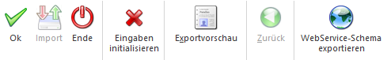
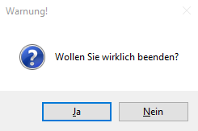

Ø Ok
Variante 1
Leitet den EXIM-Vorgang ein.
Beim Exportieren wird in Abhängigkeit der Selektionen entweder eine Meldung über den getätigten Export ausgegeben, oder die Datenquelle wird direkt geöffnet und kann bearbeitet werden (automatisch Excel).
Beim Importieren wird nach der Auswahl dieses Ribbonbuttons gem. der "Importoptionen" verfahren, sodass sich nach dem Lesen der Import-Daten z. B. zunächst die Importvorschau öffnet.
Ist hingegen der Radiobutton "automatisch nur gültige importieren" selektiert, startet der OK-Button den Import direkt.
Variante 2
Öffnet das Fenster "EXIM - Zuordnung erstellen" sofern beim manuellen Import mit der Zuordnungsoption "Neue Zuordnung erstellen" gearbeitet wird und selektierter Treiber/-typ "Excel" ist.
Ø Import
Steht während des Imports aus dem Fenster "Importvorschau" aus zur Verfügung.
Ø Ende
Schließt nach vorheriger Warnung das FORM-EXIM-Programm.

Ø Eingaben initialisieren
Setzte die Einstellungen des Fensters auf die ursprünglichen Optionen zurück - analog dem Öffnen des Programms FORM-EXIM.
Ø Exportvorschau
Ermöglicht eine Vorschau aller enthaltenen Werte innerhalb der selektierten Datenquelle.
Ø WebService-Schema exportieren
Unabhängig aller Selektions-Optionen im Fenster FORM-EXIM kann so ein entsprechendes Schema im *.xsd-Format erstellt und gespeichert werden.
Hinweise
Eine Besonderheit bei FORMs ist, dass auch ein "MESOKEY" enthalten sein kann. Bei der Verwendung von ODBC-Treibern wird dieses Feld beim Export in "MESO_KEY" umbenannt und auch beim Import in dieser Form erwartet.
Wenn das Feld für "MESOKEY" in den Importdaten leer ist, wird der Wert mit "0" gefüllt.
Anders als beim regulären Stammdaten-EXIM muss dieser Key bei der FORM nicht in der ersten Spalte stehen, sondern kann in irgendeiner Spalte verwendet werden. Bei den FORMs ohne definiertem Key kann der "MESOKEY" beim Erstellen der Zuordnung auch weggelassen werden. In der Datenquelle ist er aber trotzdem vorhanden und enthält jeweils den Wert "0" für "neuen Eintrag". Prinzipiell wird bei FORMs ohne definiertem Key der "MESOKEY" als letzte Spalte hinzugefügt.
Hinweis hinsichtlich der LIST-Ausgabe
Bei der LIST-Ausgabe "Ausgabe FORM EXIM" wird das FORM-EXIM - Fenster geöffnet, der übergebene Dateiname übernommen und "N neue Zuordnung" vorbelegt, um so die Werte in eine bestehende (auszuwählende) FORM übernehmen zu können.
Auch die Verwendung von FORM-EXIM - Vorbelegungen im EXIM-Center ist möglich. Beim Aufruf wird das Fenster in der WinLine INFO geöffnet. Wird das Fenster geschlossen, gelangt man zurück zum EXIM-Center.